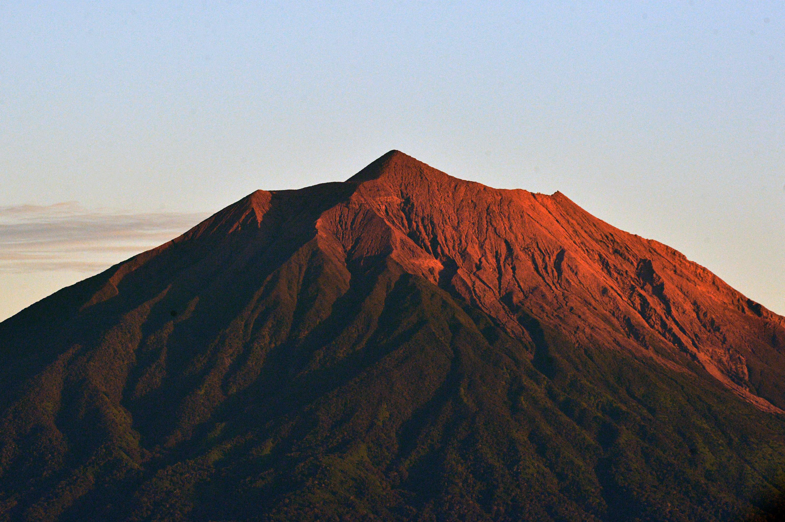
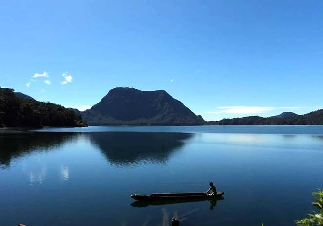

Destinasi Wisata Populer

Gunung Kerinci
Gunung tertinggi di Sumatera dengan panorama yang menakjubkan.
Baca Selengkapnya.. →

Gunung Tujuh
Danau Gunung Tujuh merupakan danau vulkanik tertinggi di Asia Tenggara yang dikelilingi tujuh puncak gunung.
Baca Selengkapnya.. →